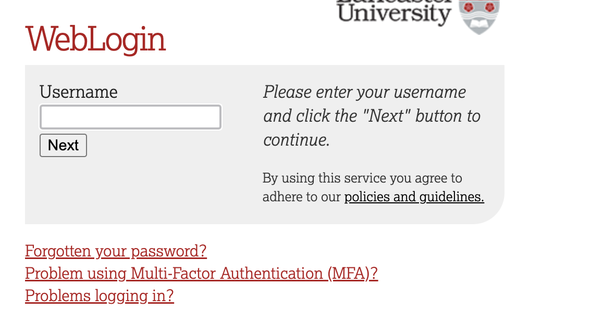
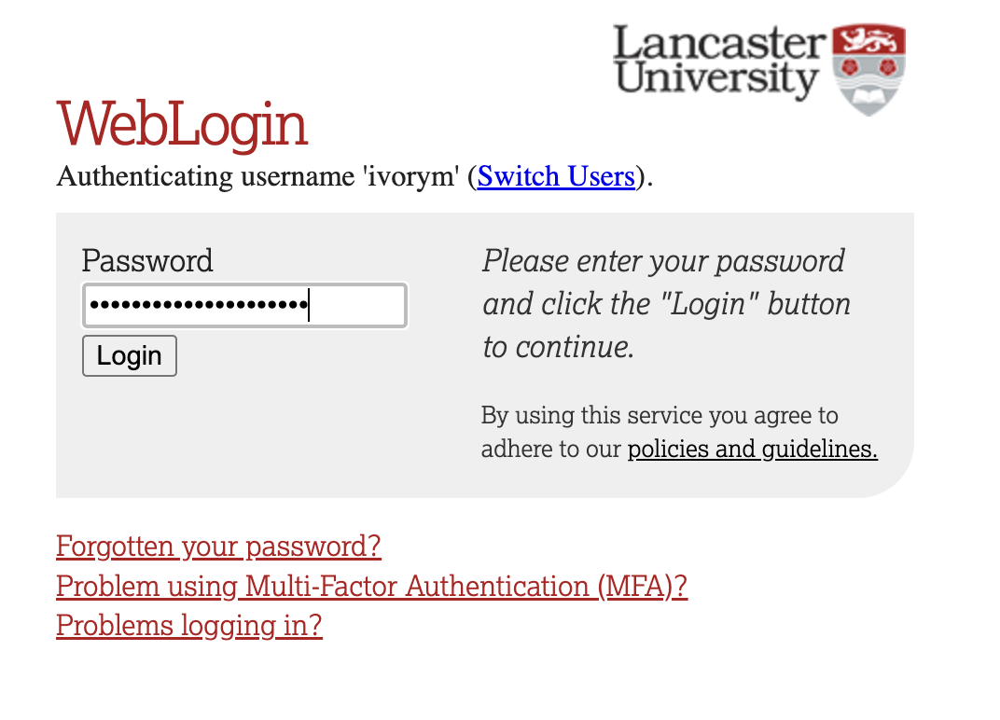
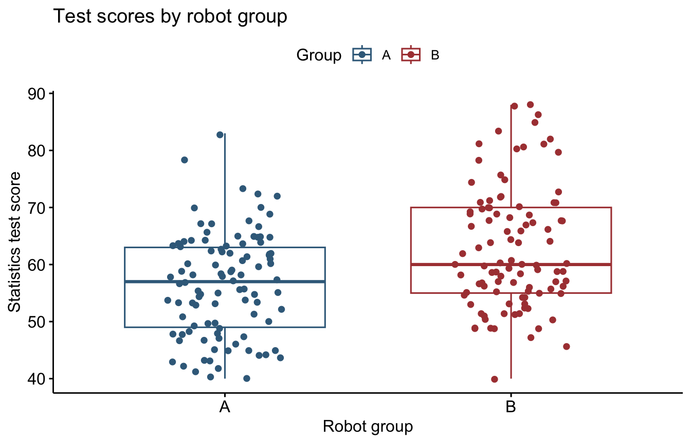

library(tidyverse) # Data manipulation and plotting
library(rstatix) # Summary statistics and effect sizes
library(ggpubr) # Box plots1. Experimental Research Strategy & Between-Participants Designs
Mark Hurlstone
Lectures
Watch Lecture 1 Part 1 here
Watch Lecture 1 Part 2 here
Watch Lecture 1 Part 3 here
Download the Lecture 1 slides here, and here for a larger version.
Watch Lecture 2 Part 1 here
Watch Lecture 2 Part 2 here
Watch Lecture 2 Part 3 here
Download the Lecture 2 slides here, and here for a larger version.
This week, you will explore how experiments establish cause-and-effect relationships through manipulation, measurement, and control, and why correlation alone cannot demonstrate causation. You will also examine between-participants designs, including their advantages and limitations, the challenges posed by individual differences and confounding variables, and strategies for creating equivalent groups. The goal is to understand how to design experiments that support valid conclusions. Before attending the practical class, please review the Week 1 lecture materials and recordings above. There are some optional multiple-choice questions below to help you consolidate your learning and it is recommended to complete these once you have viewed the lecture recordings.
Multiple-Choice Questions for Lecture 1: Experimental Research Strategy
The following questions are designed to help you consolidate your understanding of the material covered in this week’s lectures. Try to answer each question before revealing the answer and feedback.
Question 1
How do studies using the experimental research strategy differ from other types of research?
- Only experiments can demonstrate a cause-and-effect relationship between variables.
- Only experiments involve comparing two or more groups of scores.
- Only experiments can demonstrate that relationships exist between variables and provide a description of the relationship.
- Only experiments can demonstrate a bidirectional relationship between variables.
TipShow answer
Answer: 1. Only experiments can demonstrate a cause-and-effect relationship between variables.
The key advantage of the experimental research strategy is that manipulation and control allow researchers to establish cause-and-effect relationships.
Question 2
A researcher is interested in studying how indoor lighting can influence people’s moods during the winter. A sample of 100 households is selected. Fifty of the homes are randomly assigned to the bright light condition where the researcher replaces all the light bulbs with 100-watt bulbs. In the other 50 houses, all the lights are changed to 60-watt bulbs. After two months, the researcher measures the level of depression for the people living in the houses.
In this example, how many dependent variables are there?
- 100
- 50
- 2
- 1
TipShow answer
Answer: 4. 1
There is one dependent variable: level of depression. The number of participants or experimental conditions does not determine the number of dependent variables.
Question 3
Research indicates that people who suffer from depression also tend to experience insomnia. However, it is unclear whether the depression causes insomnia or the lack of sleep causes depression. What problem is demonstrated by this example?
- The directionality problem
- The third-variable problem
- The extraneous variable problem
- The manipulation check problem
TipShow answer
Answer: 1. The directionality problem
The relationship does not tell us which variable causes the other: depression could contribute to insomnia, or insomnia could contribute to depression.
Question 4
In an experiment, what is the purpose for manipulating the independent variable?
- It helps establish the direction of the relationship by showing that the dependent variable changes when you manipulate the independent variable.
- It helps eliminate the third-variable problem because you decide when to manipulate rather than waiting for the variable to change.
- It helps establish the direction of the relationship and it helps eliminate the third-variable problem.
- Manipulation does not establish the direction of the relationship or eliminate the third-variable problem.
TipShow answer
Answer: 3. It helps establish the direction of the relationship and it helps eliminate the third-variable problem.
By actively manipulating the independent variable, the researcher establishes which variable changes first and avoids relying on naturally occurring differences that might be associated with other variables.
Question 5
To establish an unambiguous relationship between two variables, it is necessary to eliminate the possible influence of which of the following variables?
- Extraneous variables
- Confounding variables
- Independent variables
- Dependent variables
TipShow answer
Answer: 2. Confounding variables
A confounding variable provides an alternative explanation for an observed relationship between the independent and dependent variables. Experiments therefore need to prevent extraneous variables from becoming confounding variables.
Question 6
Which of the following characteristics are necessary for an extraneous variable to become a confounding variable?
- It must change systematically from one participant to the next.
- It must change systematically when the independent variable is changed.
- It must have no systematic relationship with the dependent variable.
- It must have no systematic relationship to either the independent or the dependent variables.
TipShow answer
Answer: 2. It must change systematically when the independent variable is changed.
An extraneous variable becomes a potential confound when it varies systematically with the independent variable, meaning that differences in the dependent variable could potentially be attributed to the extraneous variable rather than the manipulation.
Question 7
In an experiment comparing two treatments, the researcher assigns participants to treatment conditions so that each condition has fifteen 7-year-old children and ten 8-year-old children. For this study, what method is being used to control participant age?
- Randomisation
- Matching
- Holding constant
- Limiting the range
TipShow answer
Answer: 2. Matching
The researcher is ensuring that the two conditions contain the same numbers of children of each age. The groups are therefore matched with respect to participant age.
Question 8
Holding a variable constant is a technique for removing one threat to ___________, but it can limit the ___________ of an experiment.
- internal validity, external validity
- external validity, internal validity
- internal validity, reliability
- external validity, reliability
TipShow answer
Answer: 1. internal validity, external validity
Holding an extraneous variable constant can improve internal validity by preventing it from becoming a confound. However, restricting the circumstances or participants included in an experiment can reduce its external validity.
Question 9
Which of the following is the primary goal for randomly assigning participants to treatment conditions in an experiment?
- Increase the ability to generalize the results.
- Avoid selection bias.
- Ensure that the individuals in the sample are representative of the individuals in the population.
- Minimise the likelihood that a participant variable (such as age or gender) becomes a confounding variable.
TipShow answer
Answer: 4. Minimise the likelihood that a participant variable (such as age or gender) becomes a confounding variable.
Random assignment is intended to disrupt systematic relationships between participant characteristics and the experimental conditions, thereby reducing the likelihood that participant variables become confounds.
Question 10
What is the purpose for using a control condition in an experiment?
- It provides a baseline that can be used to evaluate the size of the treatment effect.
- It minimizes the threat of a confounding variable.
- It is necessary to ensure the internal validity of the study.
- It is necessary to ensure the external validity of the study.
TipShow answer
Answer: 1. It provides a baseline that can be used to evaluate the size of the treatment effect.
A control condition provides a comparison or baseline against which the effect observed in the treatment condition can be evaluated.
Question 11
An experiment includes a treatment condition, a no-treatment control, and a placebo control. Which two conditions should be compared to determine the size of the effect that is actually caused by the treatment?
- Placebo vs. treatment
- Placebo vs. no treatment
- Treatment vs. no treatment
- You only need to look at the scores in the placebo control condition.
TipShow answer
Answer: 1. Placebo vs. treatment
Comparing the treatment condition with the placebo condition allows the researcher to estimate the effect attributable to the treatment itself while accounting for effects associated with receiving or expecting a treatment.
Question 12
A researcher exposes people to a stressful situation (such as public speaking) to examine the effect of stress on depressed mood. Why would the researcher also include a measure of stress?
- It is a measure of the dependent variable.
- It is a measure of extraneous variables.
- It is a control for confounding variables.
- It is a manipulation check.
TipShow answer
Answer: 4. It is a manipulation check.
The additional measure allows the researcher to determine whether the experimental manipulation successfully affected the intended construct—in this case, whether the stressful situation actually increased stress.
Multiple-Choice Questions for Lecture 2: Between-Participants Designs
The following questions are designed to help you consolidate your understanding of the material covered in this week’s lectures. Try to answer each question before revealing the answer and feedback.
Question 1
Which statement best characterises a between-participants experimental design?
- Participants are randomly selected from two different populations.
- Each participant is assigned to one condition of the experiment.
- Each participant is assigned to every condition of the experiment.
- Participants with different characteristics are assigned to the different conditions of the experiment.
TipShow answer
Answer: 2. Each participant is assigned to one condition of the experiment.
In a between-participants design, each participant contributes data to only one experimental condition. Different participants are therefore used in the different conditions.
Question 2
Which of the following accurately describes the scores in a between-participants experiment?
- Only one score is obtained for each participant.
- At least two scores are obtained for each participant.
- One score is obtained for each treatment condition for each participant.
- Each score represents multiple participants.
TipShow answer
Answer: 1. Only one score is obtained for each participant.
Because each participant takes part in only one treatment condition, each score is obtained from a different participant.
Question 3
If a between-participants experiment produces 50 scores in treatment 1 and 50 scores in treatment 2, then how many participants were in the entire experiment?
- 50 participants
- 200 participants
- 25 participants
- 100 participants
TipShow answer
Answer: 4. 100 participants
Each score comes from a different participant in a between-participants design. Therefore, 50 scores in each of two conditions require 100 participants in total.
Question 4
Which of the following does not guarantee that a specific participant variable will not become a confounding variable?
- Matching the variable across treatments
- Randomising the variable across treatments
- Holding the variable constant
- All of the above options guarantee that the variable does not become a confounding variable.
TipShow answer
Answer: 2. Randomising the variable across treatments
Random assignment does not guarantee that groups will be equivalent on a particular participant variable. Especially with small samples, chance can produce differences between groups. Matching or holding a specific variable constant provides more direct control over that variable.
Question 5
In an experiment comparing two treatments, the researcher assigns participants to treatment conditions so that the average participant age in each is approximately the same. For this study, what method is being used to control participant age?
- Randomisation
- Matching
- Holding constant
- Limiting the range
TipShow answer
Answer: 2. Matching
The groups are being constructed so that they are equivalent with respect to average participant age. This is an example of matching.
Question 6
Which of the following is a limitation of using matching rather than random assignment to form groups in a between-participants design?
- Matching requires another measurement procedure.
- Matching reduces error due to participant differences.
- Matching is easier than randomisation.
- Matching eliminates any systematic relationship between participant characteristics and the treatment conditions.
TipShow answer
Answer: 1. Matching requires another measurement procedure.
To match participants or groups on a particular characteristic, the researcher must first measure that characteristic. Matching can therefore require additional time and measurement compared with simple random assignment.
Question 7
How does holding a variable constant prevent the variable from becoming a confound?
- It eliminates the possibility that the variable will be substantially different from one group to another.
- It reduces error.
- It ensures a nonbiased sample.
- It increases the differences between the groups.
TipShow answer
Answer: 1. It eliminates the possibility that the variable will be substantially different from one group to another.
If a variable is held constant, it cannot vary systematically between the experimental conditions and therefore cannot provide an alternative explanation for differences between those conditions.
Question 8
Which of the following maximises the likelihood of a successful research result?
- Decrease the differences between treatments and increase the variance within treatments.
- Increase the differences between treatments and increase the variance within treatments.
- Increase the differences between treatments and decrease the variance within treatments.
- Decrease the differences between treatments and decrease the variance within treatments.
TipShow answer
Answer: 3. Increase the differences between treatments and decrease the variance within treatments.
Treatment effects are easiest to detect when the differences between treatment conditions are large relative to the variability of scores within those conditions.
Question 9
Which of the following is an option for limiting the variance within treatment conditions?
- Hold a participant variable constant.
- Randomise participant variables across treatments.
- Match participant variables across treatments.
- All of the above are options for limiting variance within treatments.
TipShow answer
Answer: 1. Hold a participant variable constant.
Holding a participant variable constant reduces individual differences within each treatment condition. Randomisation and matching can help balance participant characteristics between conditions, but they do not necessarily reduce variability within conditions.
Question 10
Which of the following is a potential problem with holding a participant variable constant?
- It threatens the reliability of the study.
- It threatens the external validity of the study.
- It lowers the likelihood of obtaining a significant difference between treatments.
- None of the above is a potential problem.
TipShow answer
Answer: 2. It threatens the external validity of the study.
Holding a participant variable constant restricts the range of individuals represented in the study. This can limit the extent to which the findings generalise to people with other characteristics.
Question 11
Which of the following accurately defines why differential attrition is a threat to the internal validity of a between-participants study?
- Groups are not created equally.
- Groups are not treated equally.
- Groups may not be composed of equivalent individuals.
- All of the above.
TipShow answer
Answer: 3. Groups may not be composed of equivalent individuals.
Differential attrition occurs when participant dropout differs across conditions. Even if the groups were initially equivalent, differential dropout can result in groups that differ systematically in their composition.
Question 12
Which of the following accurately defines compensatory equalization?
- One group demands the same benefits received by another group.
- One group works extra hard to make up for not receiving the benefits received by another group.
- One group stops trying because it is not receiving the benefits received by another group.
- Elements of the treatment in one group have spread to another group.
TipShow answer
Answer: 1. One group demands the same benefits received by another group.
Compensatory equalization occurs when differences in the treatment received by different groups lead to efforts to provide one group with benefits comparable to those received by another.
Question 13
Which of the following accurately defines compensatory rivalry?
- One group demands the same benefits received by another group.
- One group works extra hard to make up for not receiving the benefits received by another group.
- One group stops trying because it is not receiving the benefits received by another group.
- Elements of the treatment in one group have spread to another group.
TipShow answer
Answer: 2. One group works extra hard to make up for not receiving the benefits received by another group.
Compensatory rivalry occurs when participants who know they are not receiving a desirable treatment respond by increasing their effort or performance.
Question 14
Which of the following accurately defines diffusion?
- One group demands the same benefits received by another group.
- One group works extra hard to make up for not receiving the benefits received by another group.
- One group stops trying because it is not receiving the benefits received by another group.
- Elements of the treatment in one group have spread to another group.
TipShow answer
Answer: 4. Elements of the treatment in one group have spread to another group.
Diffusion occurs when aspects of a treatment intended for one condition become available to participants in another condition, reducing the intended difference between the groups.
Practical
This week’s lab
In this week’s lab, we will revisit some of the R skills introduced in Year 1. Using data from a hypothetical study comparing two robot lab assistants, we will practise inspecting and organising data, calculating descriptive statistics, visualising group differences, and conducting an independent-samples t-test. We will also revisit how we measure variability in scores, including the relationship between the sum of squares, variance, and standard deviation. These ideas will support our work on Analysis of Variance (ANOVA) in subsequent weeks.
By the end of the session, you should be able to:
- Import a data set and inspect, sort and transform its variables.
- Calculate and interpret descriptive statistics for the full sample and for separate groups.
- Explain the relationship between variance and standard deviation.
- Produce a box plot and interpret an independent-samples t-test and Cohen’s d.
- Report the findings in a short results paragraph.
Work through the examples in your R script, paying attention to the code comments and the resulting output. Attempt each exercise before opening the answer. If you get stuck, ask one of the GTAs for help.
Getting started
To log in to the R server, first make sure that you have the VPN switched on, or you will need to be connected to the university network (Eduroam). To set up the VPN, follow ISS instructions here or connecting to Eduroam here.
When you are connected, navigate to https://ps-rstudio.lancaster.ac.uk/, where you will be shown a login screen that looks like the below. Click the option that says “Sign in with SAML”.
This will take you through to the University login screen, where you should enter your username (e.g. ivorym) and then your university password. This will then redirect you to the R server where you can start using RStudio!


Note
If you have already logged in through the university login, perhaps to get to the portal, then you may not see the username/password screen. When you click login, you will be redirected straight to RStudio. This is because the server shares the login information securely across the university.
- In RStudio’s Files pane, click Home to open your home directory on the server. Select New Folder and create a folder named
psyc5141_labs. Use this folder to organise your work for the module. - Open
psyc5141_labsand create a folder inside it namedpsyc5141_lab_1. This will contain the data, project and script for today’s session. - Download the Week 1 data file and upload it to
psyc5141_lab_1. - Create an RStudio project using File → New Project → Existing Directory. Select the
psyc5141_lab_1folder insidepsyc5141_labs, then click Create Project. - Open a new R script and save it in the project folder as
week1_analysis.R.
A project keeps your work associated with this folder and sets it as the working directory, allowing R to find your data files. The working directory is also the default location R uses to save files. You can check it by running getwd(); it should end in psyc5141_labs/psyc5141_lab_1. With the project open, you do not need a separate setwd() command.
When returning to the exercise, open the project before running your script. In the server’s Files pane, navigate to psyc5141_labs/psyc5141_lab_1 and open psyc5141_lab_1.Rproj. For subsequent labs, create a new weekly folder inside psyc5141_labs.
Let’s load the packages we will use:
Next, import the data:
# Import the CSV from your project folder
lab1_data <- read_csv("week1_robo_lab.csv")The assignment operator <- stores the imported data in an object called lab1_data. We will use this name throughout the session.
Meet the robot study
A team of researchers wants to know whether the design of a robot lab assistant affects students’ learning of statistics and their attitudes towards the assistant. They develop two prototypes, Alpha and Beta, and randomly assign each student to work with one of them. Robot Beta has a more human-like appearance than Robot Alpha.


This is a single-factor between-participants design: each participant experiences only one condition. The study has one factor (another term for an independent variable), robot assignment, with two levels, Alpha and Beta.
To evaluate which robot would be more suitable as a lab assistant, the researchers needed to assess both how well students learned and how positively they responded to the robot. A robot might be effective at supporting learning without being particularly well liked, or well liked without being especially effective.
The researchers therefore measured two dependent variables, or outcomes. First, students completed a statistics test, scored from 0–100, to assess their learning. Second, students rated how much they liked their robot lab assistant on a scale from 1 (strongly dislike) to 7 (strongly like).
| Variable | Meaning |
|---|---|
ID |
Participant identifier. |
Group |
Robot assignment: A for Alpha and B for Beta. |
Score |
Statistics test score with a possible range of 0–100. |
Likeability |
Rating of the robot from 1 (strongly dislike) to 7 (strongly like). |
The researchers expected that Robot Beta’s more human-like appearance would lead students to respond more positively to it and learn more effectively when working with it. They therefore predicted that students assigned Robot Beta would obtain higher statistics test scores and give higher likeability ratings than students assigned Robot Alpha. These are two separate hypotheses, corresponding to the two dependent variables.
We will retain this study in subsequent weeks, when the researchers introduce a third robot and we extend the analysis to three groups.
Exploring the data
Inspecting and sorting rows
Let’s begin by looking at the first six rows:
head(lab1_data)# A tibble: 6 × 4
ID Group Likeability Score
<dbl> <chr> <dbl> <dbl>
1 1 A 3 55
2 2 A 2 72
3 3 A 2 45
4 4 A 3 50
5 5 A 2 45
6 6 A 5 63The head() function displays six rows by default. To display twelve, use head(lab1_data, n = 12). You can also inspect the full data set in RStudio using View(lab1_data).
To display the ten lowest test scores, we can combine arrange() and head():
lab1_data %>%
arrange(Score) %>% # Sort from lowest to highest Score
head(n = 10) # Display the first ten rows# A tibble: 10 × 4
ID Group Likeability Score
<dbl> <chr> <dbl> <dbl>
1 33 A 2 40
2 60 A 1 40
3 165 B 5 40
4 81 A 3 41
5 46 A 3 42
6 52 A 2 42
7 18 A 4 43
8 44 A 3 43
9 95 A 3 43
10 50 A 3 44The pipe, %>%, passes the result of one step to the next. Here, we start with lab1_data, sort its rows by Score, and display the first ten rows of the sorted data. This displays a sorted version without changing the original object.
Creating a variable
So far, we have inspected variables that were already present in the data set. Sometimes we need to create a new variable from an existing one. For example, suppose we wanted to label each participant’s test performance as Low, Medium, or High. We already have their numerical test score in Score; what we want is an additional column containing the corresponding label for each participant.
For this exercise, we will classify scores of 50 or below as Low, scores above 50 and up to 70 as Medium, and scores above 70 as High. A participant who scored 45 would therefore receive the label Low, while a participant who scored 65 would receive Medium. The original numerical score will remain in the data set.
We can do this using mutate(), which adds or changes columns in a data frame. Inside it, case_when() tells R which label to use for each score:
# Update the data frame in R with the new column
lab1_data <- lab1_data %>%
# Create a new column using these rules
mutate(Score_Category = case_when(
Score <= 50 ~ "Low", # Scores of 50 or below receive Low
# Scores above 50 and up to 70 receive Medium
Score > 50 & Score <= 70 ~ "Medium",
Score > 70 ~ "High" # Scores above 70 receive High
))Assigning the result back to lab1_data updates the data frame in R, adding the new Score_Category column. It does not change the original CSV file.
R checks these rules for each row, which corresponds to one participant. Each line inside case_when() gives a condition on the left of ~ and the label to assign on the right. For example, Score <= 50 ~ "Low" means “if this participant’s score is less than or equal to 50, enter Low”. The & means that both conditions must be satisfied.
Score_Category is the name we have chosen for the new column. Creating variables in this way is useful when we need to recode responses or derive new measures from information we have already collected.
Describing the data
When we measure a psychological characteristic in a group of people, they will usually obtain different scores. Some students, for example, will obtain higher test scores than others. Together, these observations form a distribution of scores. Descriptive statistics allow us to summarise that distribution rather than having to inspect every score separately.
Centre and spread
You will recall that central tendency describes the centre or typical value of a distribution. The mean is the familiar arithmetic average: add all the scores and divide by the number of scores. The median is the middle value when the scores are arranged in order. Both describe where scores are centred, although the mean is more affected by unusually high or low values.
However, an average does not tell us how similar the individuals are to one another. A class in which everyone scores close to 60 could have the same mean as a class with scores ranging from 40 to 80. This is why we also need measures of variability, or spread: they describe the extent to which scores differ within the distribution.
For our robot study, low variability in test scores would mean that students performed quite similarly; high variability would mean that performance differed more substantially between students. These are individual differences in observed performance.
The summary() function provides a useful first overview:
summary(lab1_data) ID Group Likeability Score
Min. : 1.00 Length:200 Min. :0.000 Min. :40.00
1st Qu.: 50.75 Class :character 1st Qu.:3.000 1st Qu.:53.00
Median :100.50 Mode :character Median :4.000 Median :59.00
Mean :100.50 Mean :3.725 Mean :59.69
3rd Qu.:150.25 3rd Qu.:5.000 3rd Qu.:66.00
Max. :200.00 Max. :7.000 Max. :88.00
Score_Category
Length:200
Class :character
Mode :character
For a numerical variable, this gives the minimum, first quartile, median, mean, third quartile and maximum. The table below summarises these and some additional measures we will use.
The mean and median are measures of central tendency. The range, interquartile range (IQR), variance and standard deviation (SD) are measures of variability: they describe how spread out the scores are, each in a different way.
| Measure | What does it tell us? | R code for test scores |
|---|---|---|
| Mean | Sum of the scores divided by the number of scores. | mean(lab1_data$Score) |
| Median | Middle score when scores are ordered; for an even number, the mean of the middle two. | median(lab1_data$Score) |
| Minimum and maximum | Lowest and highest scores. | range(lab1_data$Score) |
| Range | Difference between the highest and lowest scores. | diff(range(lab1_data$Score)) |
| Interquartile range (IQR) | Difference between the third and first quartiles; describes the spread of the middle 50% of scores. | IQR(lab1_data$Score) |
| Sample variance | Measures how widely scores are spread around the mean, using squared deviations. We will work through its calculation below. | var(lab1_data$Score) |
| Sample standard deviation (SD) | Measures spread around the mean in the original score units. | sd(lab1_data$Score) |
The range describes the distance between the two most extreme scores, so it can be strongly affected by a single unusually high or low observation. The IQR focuses on the middle half of the distribution. The first quartile marks roughly the lowest 25% of scores and the third quartile marks roughly the lowest 75%; subtracting them tells us how widely the central 50% are spread. Variance and SD use all the scores and describe their spread around the mean.
The dollar sign selects a variable from a data frame: lab1_data$Score means the Score column in lab1_data. The functions in this table are available in base R or its standard stats package; they do not require dplyr.
Let’s calculate several measures of spread for the test scores:
range(lab1_data$Score)[1] 40 88diff(range(lab1_data$Score))[1] 48IQR(lab1_data$Score)[1] 13var(lab1_data$Score)[1] 106.0259sd(lab1_data$Score)[1] 10.29689Understanding variance and standard deviation
Let’s now examine how variance and SD use the distance of each score from the mean to summarise individual differences.
We first find each score’s deviation from the mean: subtract the mean from the score. A score above the mean has a positive deviation; a score below it has a negative deviation. These deviations sum to zero because the positive and negative values cancel. Squaring the deviations avoids this cancellation and gives greater weight to scores further from the mean.
We can check the example in R:
# Enter the five scores
example_scores <- c(46, 48, 50, 52, 54)
mean(example_scores) # Mean: 50 points[1] 50var(example_scores) # Sample variance: 10 points squared[1] 10sd(example_scores) # Sample SD: approximately 3.16 points[1] 3.162278If all five students had obtained the same score, every deviation would be zero, giving a variance and SD of zero: there would be no individual differences in their observed scores. As scores become more dispersed, variance and SD increase. Neither measure tells us whether average performance is high or low; that is the role of the mean.
Next week, we will use the idea of variability to understand how ANOVA compares differences between group means with variation among observations within groups.
Checking the data
Descriptive statistics also help us identify possible errors. Let’s examine the minimum and maximum for both dependent variables:
# Minimum and maximum test scores
range(lab1_data$Score)[1] 40 88# Minimum and maximum likeability ratings
range(lab1_data$Likeability)[1] 0 7Each command selects one variable using $ and returns its minimum and maximum.
For this exercise, we will leave the data unchanged. In a real study, we would resolve this issue before proceeding with the analysis.
Comparing descriptive statistics across groups
So far, our descriptive statistics have combined both robot groups. To address the researchers’ hypotheses, we need separate summaries for Alpha and Beta.
In the next activities, we will focus on statistics test scores (Score), comparing the groups using descriptive statistics, a plot, and an independent-samples t-test. You will then apply the same steps to likeability ratings (Likeability) in the independent practice section.
First, use factor() to tell R that Group represents categories. Setting the levels to A then B also determines the order in which the groups are displayed and compared:
lab1_data$Group <- factor(lab1_data$Group, levels = c("A", "B"))We can use group_by() from dplyr and get_summary_stats() from rstatix to summarise the scores within each group. We will save the results as score_descriptives so that we can refer to them again:
score_descriptives <- lab1_data %>%
group_by(Group) %>% # Calculate separate summaries for Alpha and Beta
get_summary_stats(Score, show = c("mean", "sd", "min", "max", "iqr"))
score_descriptives # Display the table# A tibble: 2 × 8
Group variable n mean sd min max iqr
<fct> <fct> <dbl> <dbl> <dbl> <dbl> <dbl> <dbl>
1 A Score 100 56.6 9.05 40 83 14
2 B Score 100 62.8 10.6 40 88 15The output includes the number of observations in each group. Compare the means and SDs: which group scored higher on average, and which was more variable?
get_summary_stats() does not include variance among its standard summaries. We can nevertheless add it to our table using the relationship we have just learned: variance is SD squared. This also gives us another example of creating a variable with mutate():
score_descriptives <- score_descriptives %>%
mutate(variance = sd^2) # Add variance by squaring each group's reported SD
score_descriptives # Display the expanded table# A tibble: 2 × 9
Group variable n mean sd min max iqr variance
<fct> <fct> <dbl> <dbl> <dbl> <dbl> <dbl> <dbl> <dbl>
1 A Score 100 56.6 9.05 40 83 14 81.8
2 B Score 100 62.8 10.6 40 88 15 112. The added variances are approximate because get_summary_stats() rounds its output. For an unrounded sample variance, use var() on the original scores. For our purpose here, the table makes the relationship between SD and variance clear without introducing a different summary function.
Look at the SD and variance for each group. A larger value means that students’ test scores are more spread out within that group: there are greater individual differences in their observed performance. This is a different question from which robot group obtained the higher mean.
Visualising group differences
A plot helps us inspect the distributions as well as their numerical summaries. We will use ggboxplot() to display the test scores by robot group:
set.seed(5141) # Reproduce the positions of the jittered points
# Create a box plot using our data
ggboxplot(
lab1_data,
# Put robot group on x and the outcome on y
x = "Group", y = "Score",
# Colour Alpha blue and Beta red
color = "Group", palette = c("#3B6B8A", "#AC4141"),
# Show individual observations with horizontal jitter
add = "jitter",
# Label the axes
xlab = "Robot group", ylab = "Statistics test score",
# Add a descriptive title
title = "Test scores by robot group"
)
The x and y arguments specify the variables plotted on each axis. color = "Group" assigns a different colour to each group, and add = "jitter" displays individual observations with a small horizontal displacement to reduce overlap.
Comparing two groups
The independent-samples t-test
Our descriptive statistics and box plot show how the two groups performed in this sample. The next question is whether there is evidence of a difference between the population means. We can examine this using an independent-samples t-test, which compares the means of two separate groups. It is appropriate to use an independent-samples test here because each student worked with only one robot.
The test starts from the null hypothesis that the population means are equal. It asks whether the difference we observed is large enough, relative to the variability in the data and the sample sizes, to provide evidence against that hypothesis.
Let’s run the test using t.test(). In the formula below, Score is our dependent variable and Group identifies the two groups we want to compare:
# Two-sided independent-samples t-test assuming equal population variances
score_test <- t.test(
Score ~ Group,
data = lab1_data,
var.equal = TRUE
)
score_test
Two Sample t-test
data: Score by Group
t = -4.4152, df = 198, p-value = 1.658e-05
alternative hypothesis: true difference in means between group A and group B is not equal to 0
95 percent confidence interval:
-8.896848 -3.403152
sample estimates:
mean in group A mean in group B
56.61 62.76 The argument var.equal = TRUE requests the version of the test that assumes equal population variances. We will return to checking assumptions in later sessions.
The main things to look for in the output are:
- The group means: which robot group scored higher on average?
- The p-value: is the difference statistically significant? With a significance level of .05, a p-value below .05 leads us to reject the null hypothesis of equal population means.
- The 95% confidence interval: what range of values does the analysis give for the difference between the population means? This interval is in test-score points, not units of t.
The output also gives the t statistic and degrees of freedom (df), which we need when reporting the result. Earlier, we calculated Beta minus Alpha, giving 6.15 points. Because we ordered the factor levels A then B, R calculates Alpha minus Beta, giving −6.15 points. A negative t therefore indicates a lower mean for Alpha. Reversing the factor order would reverse the sign of t, but its magnitude and the two-sided p-value would remain unchanged.
Statistical significance does not tell us how large or practically important a difference is. For that, we also need to consider the size of the difference.
Effect size
Cohen’s d expresses the difference between two means in standard-deviation units. To calculate it, we divide the mean difference by a measure of the variability within the groups.
The pooled SD combines the variability within the two groups into a single measure. We use it to express the mean difference in standard-deviation units.
For example, a mean difference of 5 points divided by a pooled SD of 10 points gives d = 0.50: the means differ by half a standard deviation. Let’s calculate Cohen’s d for our robot groups:
score_effect <- cohens_d(
data = lab1_data,
formula = Score ~ Group,
var.equal = TRUE
)
score_effect# A tibble: 1 × 7
.y. group1 group2 effsize n1 n2 magnitude
* <chr> <chr> <chr> <dbl> <int> <int> <ord>
1 Score A B -0.624 100 100 moderate Because the comparison is Alpha minus Beta, a negative d indicates a lower mean for Alpha. Cohen’s d is not restricted to values between −1 and 1.
Absolute magnitudes of approximately 0.20, 0.50 and 0.80 are often described as small, medium and large, respectively. These are rough conventions; the practical importance of a difference depends on the outcome and research context.
Reporting the findings
A results paragraph should identify the analysis, describe the direction of the difference, and report the relevant descriptive and inferential statistics. Report means and SDs to two decimal places, and identify what the confidence interval refers to.
Use your output to complete the following paragraph:
An independent-samples t-test assuming equal variances was conducted to compare statistics test scores for students assigned Robot Alpha and Robot Beta. Students assigned Robot Alpha (M = …, SD = …) scored [lower/higher] on average than those assigned Robot Beta (M = …, SD = …). The difference was [statistically significant/not statistically significant], t(…) = …, p …, 95% CI […, …], d = ….
Use an exact p-value to three decimal places unless it is below .001, in which case write p < .001. Do not report p = .000. Use the sign of t and d shown in the output.
Independent practice
Apply the analysis to likeability
Additional practice: create a new score band
Complete this exercise if time permits, or use it for further practice after the session.
Before you finish
Save your R script and check that its comments make the sequence of steps clear. Your script should provide a record that you can reopen and run again, starting with loading the packages and importing the data. End your RStudio server session when you have finished.
You should now be able to explain why we report variability alongside a mean, how variance relates to SD, and how descriptive statistics, a plot and a t-test contribute different information about a group comparison.
Next week, we will return to the robot study with three groups. This will introduce one-factor between-participants ANOVA and the distinction between variation within groups and differences between their means.